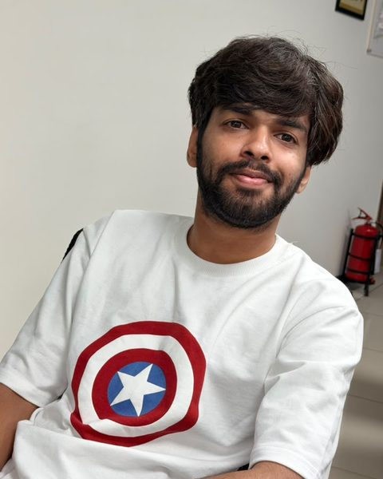
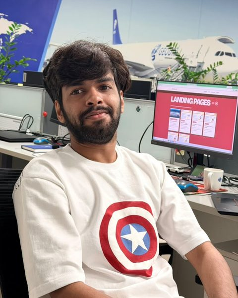

Hi, I'm Sreekesh Narayanan.
- Technical Content Writer
- Product Content Analyst
- UX Writer & Content Strategist
- Content Writer
With over five years of experience in technical communication, UX writing, and SEO content strategy, I translate complex software architectures into intuitive user experiences. Holding a B.Sc. in Computer Science and a PG Diploma in Journalism and Communication from Kerala Media Academy, I bridge the gap between software engineering teams and end users.
Beyond technical and product documentation, I write long-form cultural essays on Indian philosophy and wellness for Hidden Mantra, and manage two independent sports journalism publications, Lines Man Thoughts and Freehit Shots, under Hooman Inks.



Core expertise & track record
- 01
SaaS Documentation & Information Architecture
Authored end-to-end software manuals, developer reference guides, Standard Operating Procedures (SOPs), and system deployment documents for enterprise supply chain platforms at Geodis India and Distinct Infotech Solutions.
- 02
UX Writing & Content Design
Crafted clear interface microcopy, multi-step user onboarding flows, and conversion-focused landing pages for global SaaS, e-learning, and travel platforms including Flyscanner.
- 03
SEO Strategy & High-Volume EdTech Content
Produced and optimized over 1,000 search-driven articles, technical study guides, and career resources at Entri App, leveraging Google Analytics data to drive organic traffic and user engagement.
- 04
Tools & Technical Stack
Experienced with Git, Markdown, GitBook, WordPress, Google Analytics, HTML, CSS, and localization-ready documentation workflows.
What I write
Pick a field to see the work.
Lines Man Thoughts, on football
All posts ↗
A Heart Too Heavy for the Jersey: The Intimate and Tragic Journey of El Burrito
15 July 2026, 6 min read
The Winged Rebel: The Tragedy and Triumph of Garrincha
2 July 2026, 6 min read
Monsoons, Manifestos, and Maradona: The Political Romance of Kerala Football
16 June 2026, 4 min read
The Velvet Tragedy: A Poetic History of Dutch World Cup Football
12 June 2026, 5 min readFreehit Shots, on cricket
All posts ↗
The Silent Tournament: Why the Women’s T20 World Cup 2026 is Starting in Absolute Silence Today
12 June 2026, 6 min read
India Creates History: Women’s Blind Cricket Team Wins the Inaugural T20 World Cup 2025
24 November 2025, 4 min read
JADEJA SAMSON Trade: A Shot Beyond Sentiments
11 November 2025, 3 min readDocumentation
Version management process
A simple guide for the whole team on how versions are planned, numbered and released.
Distinct Infotech Solutions, GitBookMobiRemit infrastructure and deployment document
The servers, infrastructure and deployment steps for the MobiRemit platform.
Distinct Infotech Solutions, GitBookTechnical blogs
- Top full stack development frameworks to excel in 2024TechMedia Post, January 2024
- 5 reasons why the OET is the best English test for medical professionalsTechnonguide, January 2024
- Germany higher studies: 10 things every student must know in 2024What After College, January 2024
- The benefits of studying abroad and how to make the most of itSugermint
- Cloud computing architecture: a comprehensive guideSapizon, March 2022
- Major benefits, challenges and use cases of cloud computingSapizon, March 2022
- Mobile app security testing and testing toolsSapizon, March 2022
- The mobile development stack: a beginner's guideSapizon, March 2022
- How much does it cost to develop a dating app like Tinder?Sapizon, March 2022
- Some common mistakes a tester makesSapizon, April 2022
- Virtual reality in education: an overviewSapizon, February 2022
More than 1,000 articles for Entri: exam notes, recruitment updates and career guides. A few of them:
How to build a data scientist portfolio
What makes a strong data science portfolio, and how one helps you move up in your career.
Entri, April 2024Classical mechanics vs quantum mechanics
The key differences, concepts and principles, with a quiz for UPSC aspirants.
Entri, September 2024GATE electronics and communication engineering notes
Subject-wise notes for the GATE ECE paper.
Entri, August 2024GATE mechanical engineering notes
Topic-wise notes for the GATE mechanical paper.
Entri, August 2024GATE civil engineering notes
Subject-wise notes for the GATE civil paper.
Entri, August 2024GATE electrical engineering notes
Topic-wise notes for the GATE electrical paper.
Entri, August 2024LIC HFL junior assistant exam date
Important dates and how to apply for the 200 junior assistant posts.
Entri, August 2024Union Bank of India apprentice recruitment
Everything candidates need to apply for the 500 apprentice posts.
Entri, August 2024Long-form essays on Indian festivals, Buddhism, yoga and Ayurveda for Hidden Mantra.

9 days of Navaratri
The story behind the festival, and the rituals and celebrations of each of its nine days.
September 2024
Navratri fasting diet plan
A nine-day plan for keeping your health and energy up while you fast through the festival.
October 2024
Is enlightenment or ethics the main goal of Buddhism?
How moral conduct, meditation and wisdom work together on the path to nirvana.
July 2024
The Tibetan dream yoga journey
Why Tibetan Buddhism treats dreams as a way to understand consciousness, and how the practice works.
August 2024
India's gift to the world: yoga and Ayurveda
Where yoga and Ayurveda come from in the Vedas, and why yoga is much more than its poses.
August 2024Conversion-focused page copy for course and service pages.

Global visa services
Landing page copy for Flyscanner's visa service, covering applications for more than 90 countries.
Flyscanner, freelance
Best online bank coaching in Kerala
Course page for Entri's coaching for IBPS, SBI, RBI and Kerala Bank exams.
Entri
SSC online coaching in Kerala
Course page for SSC CGL, CHSL, MTS, GD and other SSC exam coaching.
Entri
RRB online coaching in Kerala
Course page for Railway Recruitment Board exam coaching.
Entri
Best RRB NTPC online coaching in Kerala
Course page for RRB NTPC coaching, covering faculty, syllabus and test series.
Entri
IBPS Clerk online coaching
Course page for IBPS Clerk prelims and mains coaching.
EntriExperience
Product Content Analyst
at Geodis IndiaDocumentation, reference guides and manuals for supply chain software, plus UX copy for landing pages, onboarding flows and product blogs.
Content Writer
at EntriArticles, step-by-step guides and interface text for an e-learning platform, updated using Google Analytics data.
Technical Writer
at Sapizon TechnologiesInstruction manuals and project documents written with developers and product managers.
Digital Content and Website Specialist
at New Year NewsRan the WordPress site, from publishing and categories to search keyword research.
Education
- PG Diploma in Journalism and Communication, Kerala Media Academy
- B.Sc. in Computer Science, Sadanam Institute of Commerce and Management Studies
Languages
- English
- Malayalam
- Hindi
Tools
- WordPress
- Git
- Markdown
- GitBook
- Google Analytics
- Basic HTML and CSS